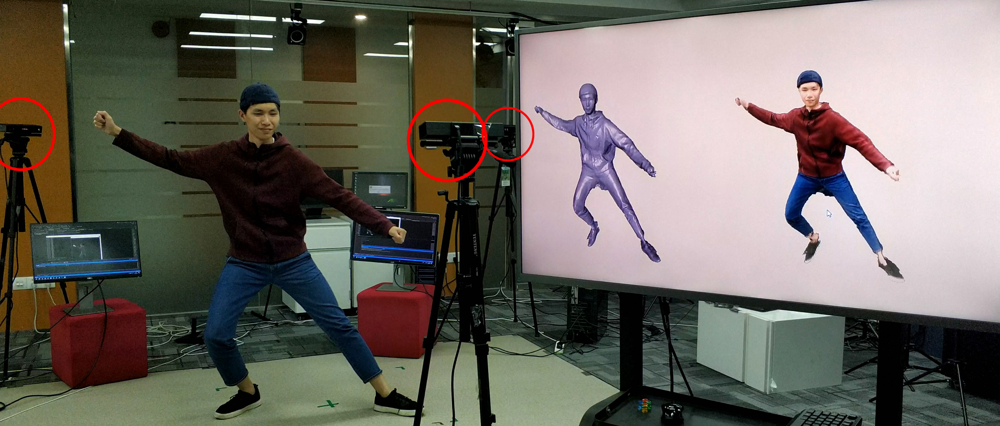
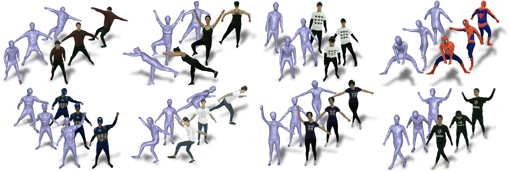

IEEE Transactions on Pattern Analysis and Machine Intelligence
UnstructuredFusion: Realtime 4D Geometry and Texture Reconstruction using Commercial RGBD Cameras
Lan Xu1,2, Zhuo Su2, Tao Yu2,3, Yebin Liu2, Lu Fang2
1 Hong Kong University of Science and Technology 2 Tsinghua University 3 Beihang University
Abstract
A high-quality 4D geometry and texture reconstruction for human activities usually requires multiview perceptions via highly structured multi-camera setup, where both the specifically designed cameras and the tedious pre-calibration restrict the popularity of professional multi-camera systems for daily applications. In this paper, we propose UnstructuredFusion, a practicable realtime markerless human performance capture method using unstructured commercial RGBD cameras. Along with the flexible hardware setup using simply three unstructured RGBD cameras without any careful pre-calibration, the challenge 4D reconstruction through multiple asynchronous videos is solved by proposing three novel technique contributions, i.e., online multi-camera calibration, skeleton warping based non-rigid tracking, and temporal blending based atlas texturing. The overall insights behind lie in the solid global constraints of human body and human motion which are modeled by the skeleton and the skeleton warping, respectively. Extensive experiments such as allocating three cameras flexibly in a handheld way demonstrate that the proposed UnstructuredFusion achieves high-quality 4D geometry and texture reconstruction without tiresome pre-calibration, liberating the cumbersome hardware and software restrictions in conventional structured multi-camera system, while eliminating the inherent occlusion issues of the single camera setup.
 |
|---|
Fig. 1 Pipeline of UnstructuredFusion.
Results
|  |
|---|
Fig. 2 System setup and live reconstruction results.
|  |
|---|
Fig. 3 Example results reconstructed by UnstructuredFusion.
Demo video
Paper
[PDF]